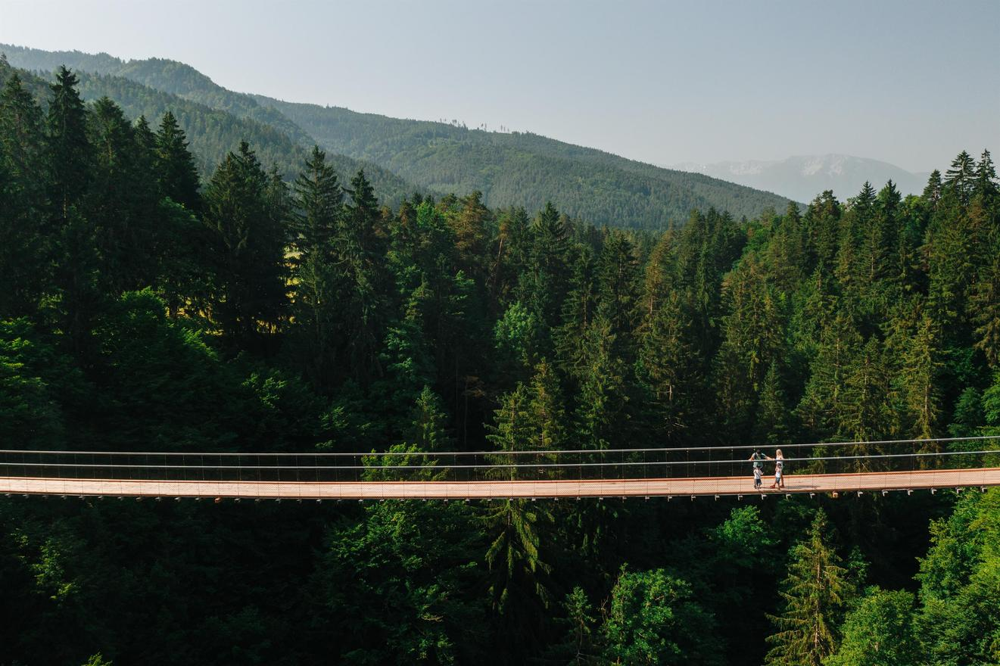
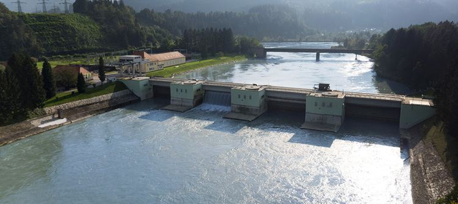
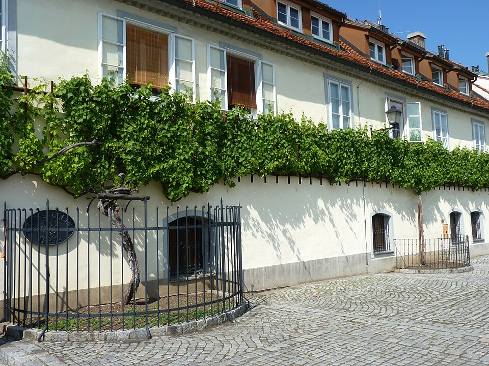
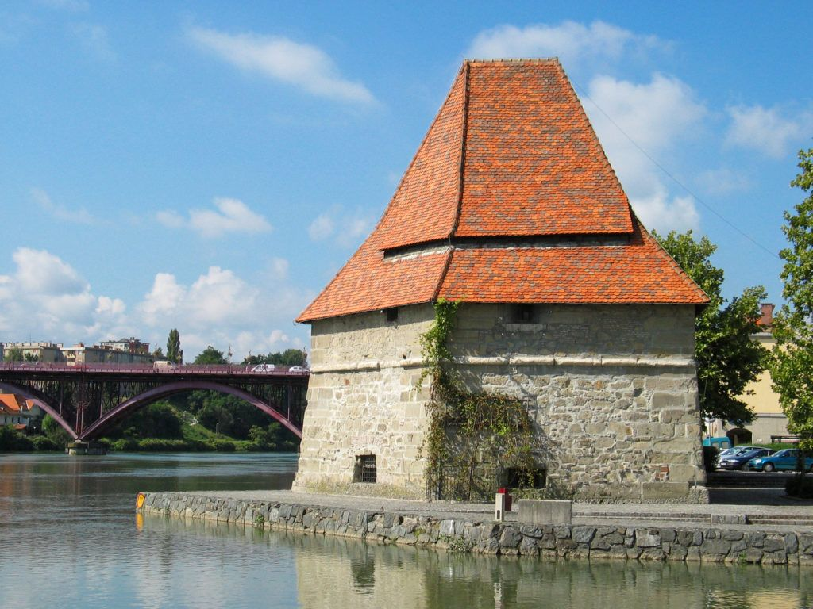
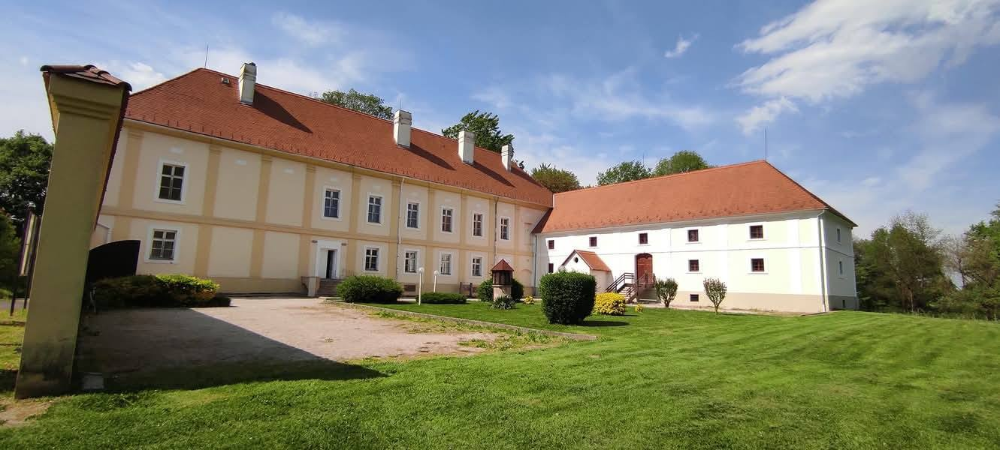

DAY09 – Hazaút: Karintia → Maribor → Szécsisziget
A mérés automatikusan indul oldalnyitáskor, majd 5 mp múlva frissít.
A távolságok minden célpontnál frissülnek.
A helymeghatározás nem érhető el. Ellenőrizd az engedélyeket.
1. Hängebrücke Santa Lucia
mérés: várakozás
távolság: —
Modern gyalogos függőhíd a Feistritz patak mély szurdoka felett, az osztrák–szlovén határ közelében.

2. Dravogradi vízerőmű
mérés: várakozás
távolság: —
A Dráva szlovén szakaszának egyik korai folyami erőműve Dravograd térségében, széles duzzasztott víztükörrel.

3. Öreg szőlőtőke háza, Maribor
mérés: várakozás
távolság: —
A Lent városrészben álló ház falán fut a világ legrégebbi, ma is termő szőlőtőkéje (Žametovka), több mint 400 éves.

4. Maribori víztorony
mérés: várakozás
távolság: —
Késő középkori erődtorony a Dráva partján, a folyó felőli városvédelem emléke, ma sétány és boros hangulatkörnyezet.

5. Szapáry–Andrássy kastély, Szécsisziget
mérés: várakozás
távolság: —
Történelmi nemesi rezidencia a Mura–Kerka vidékén, a túra utolsó, „magyar” zárópontja Szécsiszigeten.
